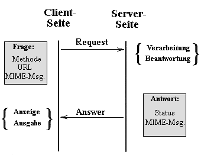
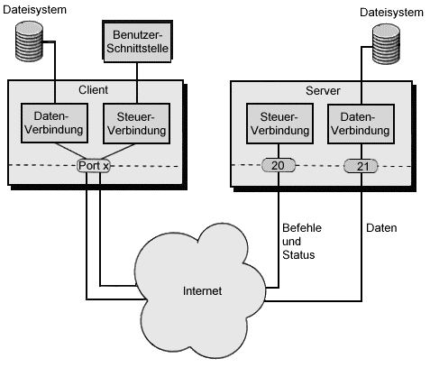

|
Internet-TechnologieProf. Jürgen Plateund Jög Holzmann |
|
Internet-TechnologieProf. Jürgen Plateund Jög Holzmann |

Es wird normalerweise ein httpd-Hauptprozeß gestartet, der sich an alle ihm durch Port oder Listen zugewiesene Ports (normalerweise 80 (Standard) oder 443 (SSL)) bindet. Anschließend erzeugt dieser Hauptprozeß Kindprozesse unter der eingestellten UID und GID, die die Client-Anfragen behandeln. Mit der MinSpareServer und MaxSpareServers wird bestimmt, wieviele unbeschäftigte Kindprozesse in Reserve gehalten werden (preforking). Mit der Variablen MaxClients kann man festlegen, wieviele Kindprozesse maximal gleichzeitig gestartet werden können.
Vorteil dieser Methode ist die schnelle Reaktion des Servers auf Clientanfragen. Nachteil ist der große Speicherplatzbedarf. Hat man das Maximum an gleichzeitigen Kindprozessen zu hoch eingestellt, reicht der Hauptspeicher nicht für alle Prozesse aus und das dadurch hervorgerufene Swapping verringert die Performance drastisch.
| ServerType standalone | Es wird festgelegt, daß der Server beim Starten selbst den mit Listen definierten Port (Standard ist 80) öffnet und auf Anfragen wartet. |
| Listen 80 | Falls mehrere Interfaces bzw. IP Adressen für den Rechner vorhanden sind, kann mit Listen festgelegt werden, welche Ports für welche Adresse abgehört werden sollen |
| User wwwrun Group nogroup |
Nach dem öffnen des Ports (als root), wechselt Apache zu der als User und Group angegebenen UID bzw. GID. Die Zuweisung kann entweder durch angeben des Namens oder durch # gefolgt von der ID erfolgen |
| ServerAdmin webmaster@domain.tld | Bei Fehlermeldungen wird diese Mail-Adresse an den Client geliefert. |
| ServerName www.zwergenburg.de | Name des Servers. Ohne ServerName würde der richtige Hostname des Rechners zurückgeliefert. Wichtig für Redirects und virtuelle Hosts. |
| ServerRoot /opt/www | Diese Einstellung sorgt dafür, daß Apache ausgehend von diesem Verzeichnis die Verzeichnisse für Dokumente, Logfiles und Konfigurationsdateien sucht. |
| DocumentRoot /opt/www/htdocs | Hier werden die HTML Seiten abgelegt. Unterhalb /opt/www können dann Dateien liegen, die nicht über das Webinterface zugänglich sein sollen. |
| AccessConfig /etc/httpd/access.conf | Datei zur Definition der Funktionen und Zugriffsrechte bestimmter Verzeichnisse |
| ResourceConfig /etc/httpd/srm.conf | Diese Datei enthält Angaben zur Formatierung und dem Aussehen der automatisch erzeugten Verzeichnisindizes (FancyIndexing) sowie Angaben zu den einzelnen Dateitypen. |
| TypesConfig /etc/httpd/mime.types | Enthält die Zuordnung Dateiendung zu Mime-Typ |
| PidFile /var/run/httpd.pid | Datei, in der sich die Prozeß ID des Httpd-Daemons befindet |
| LockFile /var/locks/httpd.lock | Spezifizert das Lock File |
| ErrorLog /var/log/httpd/httpd.error | Datei zur Aufnahme von Fehlermeldungen und sonstigen Info Meldungen (mod_log_config) |
| ScriptLog /var/log/httpd/httpd.script | Datei zum Debuggen von CGI-Scripten (mod_cgi) |
| CustomLog /var/log/httpd/httpd.access "%h %l %u %t \"%r\" %>s %b \"%{Referer}i\" \"%{User-agent}i\"" | Erzeugt die Datei httpd.access im Combined Log Format (Hostname, Remote Logname, User ID, Zeit, erste Zeile der Client-Anfrage, HTTP-Statuscode, Größe der vom Server ausgelieferten Datei (ohne Header), Wert des Referer Headers, Wert des User-Agent Headers) |
| Timeout 300 | Zeitlimit für Client-Anfragen in Sekunden |
| StartServers 5 | Es werden automatisch 5 Kindprozesse des Apache gestartet |
| MaxClients 150 | Maximal gleichzeitig laufende Server-Prozesse |
| MaxRequestsPerChild 30 | Nach 30 Anfragen wird der Kindprozeß beendet und gegebenenfalls ein neuer gestartet. |
| MinSpareServers 5 MaxSpareServers 10 |
Es existieren immer mindestens 5 und höchstens 10 leerlaufende Prozesse |
| KeepAlive On | Unterstützung der HTTP-1.1-Persistent Connections. Dadurch können über eine TCP-Verbindung mehrere Anfragen an den Server geschickt werden. |
| MaxKeepAliveRequests 10 | Es werden 10 aufeinanderfolgende Anfragen innerhalb einer Keep-Alive-Verbindung erlaubt. |
| KeepAliveTimeout 15 | Der Server wartet maximal 15 Sekunden auf weitere Anfragen des Clients bei einer Keep-Alive-Verbindung |
| HostnameLookups Off | Es sollen keine DNS-Lookups ausgeführt werden. Aus performancegründen anzuraten. |
| <Directory />
Options None AllowOverride None Order deny,allow Deny from all </Directory> |
Im root-Verzeichnis werden keine Konfigurationsanweisungen in der Datei .htaccess beachtet und es wird kein Zugriff auf irgendwelche Unterverzeichnisse gestattet |
| <Files ~
"(\.htaccess|/core|~|#|\.bak|\.BAK)$"> order deny,allow deny from all </Files> |
Es wird kein Zugriff auf Dateien gestattet die .htaccess heißen, sich in einem Verzeichnis core befinden oder ~ bzw. # enthalten oder mit .bak bzw. .BAK enden |
| <Location />
Otions SymLinksIfOwnerMatch IncludesNOEXEC order allow,deny allow from all AuthType Basic AuthUserFile /etc/httpd/passwd </Location> |
Für /opt/www/htdocs und alle Unterverzeichnisse wirde festgelegt, daß symbolische Links verfolgt werden dürfen, wenn sie dem Benutzer (wwwrun) gehören und daß Include Anweisungen ausgeführt werden dürfen (außer exec). |
| <Directory /opt/www/cgi-bin>
Options ExecCGI Order allow,deny Allow from all </Directory> |
Im Verzeichnis cgi-bin können CGI-Scripts ausgeführt werden |
| Alias /icons /opt/www/icons
Alias /cgi-bin /opt/www/cgi-bin Alias /images /opt/www/images |
Aliasname für bestimmte Directories. Diese werden anschließend behandelt, wie wenn sie sich unter htdocs befinden würden |
| UserDir public_html | Benutzer können in ihren Homedirectories ein Unterverzeichnis namens public_html anlegen und so eigene Seiten veröffentlichen, die über servername/~username erreichbar sind. |
| DirectoryIndex index.html | Wird nur ein Directory angegeben, wird automatisch nach einer Datei index.html gesucht und angezeigt. |
| IndexOptions FancyIndexing | Wird keine Index-Datei gefunden, wird der Inhalt des Verzeichnisses als Verzeichnisbaum angezeigt. Mit AddIcon werden bestimmten Dateendungen dann bestimmte Icons zugeordnet. |
| IndexIgnore .??* *~ *# *.bak *.BAK HEADER.* README.* RCS core | Diese Dateien werden nicht durch FancyIndexing angezeigt |
| AccessFileName .htaccess | Jedes Verzeichnis kann eine Datei .htaccess enthalten, mit der (falls erlaubt) die Optionen von access.conf überschrieben werden k&oum;nnen. |
| DefaultType text/plain | Dateien ohne Endung werden wie Text-Files behandelt. |
Wie man Verzeichnisse durch Passwort schützen kann, erfahren Sie, wenn Sie das Verzeichnis /geheim auf diesem Server wählen. Um sich zu authentisieren, geben Sie als Usernamen "user" und als Passwort "geheim" eingeben.
Viele Server bieten die Möglichkeit, zu jedem Verzeichnis automatisch
eine Inhaltsseite zu erstellen. Da freut sich der Hacker: Mit der URL
"http://domain/cgi-bin/" erhält er ein schönes Listing aller
installierten CGI-Skripte. Mit etwas Glück ist auch noch die eine oder
andere von einem Editor erstellte Backup-Datei übriggeblieben und kann
direkt heruntergeladen werden. Zur Abhilfe sollte man unbedingt die
automatische Indexfunktion ausschalten, zumindest in allen Verzeichnissen,
die CGI-Skripte enthalten. Unter Windows NT sollte man dem Web-Server im
/cgi-bin/-Verzeichnis nur Ausführungs- und keine Leserechte gewähren.
Falls man keinen Einfluß auf die Konfiguration hat, etwa weil die
Website bei einem Service-Provider liegt, sollte man eine leere
"index.html"-Seite anlegen. Surfer bekommen dann diese anstelle des
Verzeichnis-Listings angezeigt. Weiterhin sollte man prüfen, ob der
Lieblings-Editor Backup-Dateien hinterläßt, und diese
regelmäßig löschen.
Wo wir schon beim Aufräumen sind: Es gab in der Vergangenheit
Fälle, wo im Lieferumfang des Web-Servers gefährliche
CGI-Beispielskripte enthalten waren. Deshalb sollte man alle CGI-Skripte
vom Server entfernen, die man nicht benötigt. Denn was nicht
vorhanden ist, kann auch keinen Schaden anrichten.

./configure --enable-autoshadow --sysconfdir /etc/ make make installDie erste Option bewirkt, daß die Datei /etc/shadow als Passwortdatei benutzt wird und die zweite Option setzt das Konfigurationsverzeichnis auf /etc.
Nachdem Sie einen eventuell schon vorhandenen FTP-Server deaktiviert haben, wird in der Datei /etc/inetd.conf die Zeile
ftp stream tcp nowait root /usr/sbin/proftpd proftpdoder bei Verwendung des tcpd:
ftp stream tcp nowait root /usr/sbin/tcpd /usr/sbin/proftpd proftpdeingefügt und der inetd neu gestartet. Im zweiten Fall muss dann noch die Datei hosts.allow durch die Zeile
proftpd: localhost : ALLOWergänzt werden (statt "localhost" kommt da ggf. etwas anderes hin).
Falls ein Anonymous-FTP-Zugang geboten werden soll, muß noch ein Benutzer ftp mit dem Homeverzeichnis /home/ftp (mit den Unterverzeichnissen pub und ggf. pub/incoming) eingerichtet werden. Ein Text, der immer beim Login ausgegeben wird, kann in /home/ftp/login.txt gespeichert werden.
Vor allem muss die Datei /etc/proftpd.conf konfiguriert werden. Im Source-Verzeichnis befinden sich unter sample-configurations/ einige Beispiel-Konfigurationen, die man zum ersten Testen verwenden kann.
Wir spielen das ganze einfach einmal anhand eines einfachen Beispiels durch, wie es auch in der Praxis auftreten dürfte. Die deutsche Pinguin GmbH, die sich auf die Herstellung von Netzwerklösungen für Linux spezialisiert hat, möchte ihre Programme per FTP der gesamten Welt zur Verfügung stellen, ihren Gästen und Kunden aber auch die Möglichkeit bieten, Programme auf dem Server abzulegen (z.B. zum Debuggen). Da die kleine Firma auch ein paar außenstehende Mitarbeiter hat, die im gesamten Bundesgebiet operieren, sollen sie auch an Daten kommen, die nicht für die Öffentlichkeit bestimmt sind. Diese Dateien sind dann im jeweiligen Home-Verzeichnes der User-Accounts zu finden. Zuerst wird ein Grundgerüst für die Konfigurationsdatei /etc/proftpd.conf erzeugt, in der die wichtigsten Grundeinstellungen eingetragen werden:
ServerName "Bluff GmbH" ServerAdmin ftpadm@bluff.de ServerType inetd Umask 022 User nobody Group nobody DisplayLogin login.txt DisplayFirstChdir .message MaxClients 15 MaxInstances 30
Hallo, Benutzer %U@%R! Willkommen auf dem FTP-Server der Bluff GmbH! Sie koennen Programme aus dem Verzeichnis /pub/coolstuff downloaden. Falls Sie uns Dateien zukommen lassen, legen Sie diese im Verzeichnis /pub/incoming ab. Falls Sie Fragen oder Probleme zu unserem FTP-Server haben, schreiben Sie bitte eine E-Mail an %E. Viel Spaß wünscht Ihnen Das Bluff-Team
Der Anonymous-FTP-Zugang für die Gäste wird eingerichtet (als Fortsetzung der /etc/proftpd.conf):
# Normally, we want files to be overwriteable.
<Directory /*>
AllowOverwrite on
</Directory>
# anonymous ftp section
<Anonymous ~ftp>
RequireValidShell off
User ftp
Group ftp
# Maximum clients with message
MaxClients 5 "Sorry, max %m users -- try again later"
User ftp
Group ftp
UserAlias anonymous ftp
<Limit LOGIN>
AllowAll
order allow,deny
Allow from 192.168.1. , .example.net
deny from all
</Limit>
<Limit WRITE>
DenyAll # Schreiben verboten
</Limit>
<Directory incoming>
<Limit READ>
DenyAll
</Limit>
<Limit STOR>
AllowAll
</Limit>
</Directory>
</Anonymous>
Das war's schon für die Konfigurationsdateien.
Eine besonders interessante Eigenschaft des ProFTPD: Man kann mehrere virtuellle Hosts einrichten, die alle getrennt ansprechbar sind:
<VirtualHost ftp.trouble.de> ServerName "Trouble" ServerAdmin boss@trouble.de </VirtualHost>Bei sehr beschäftigten Servern sollte man unbedingt die Variablen TimeoutIdle, TimeoutLogin und TimeoutNoTransfer setzen, um den Server besser auszunutzen. Außerdem sind die Zugriffsbeschränkungen des Servers natürlich viel komplexer und detaillierter konfigurierbar als diese kurze Übersicht erahnen läßt.
Weitererführende Infos liefern der Konfigurationstext und die Referenz, die leider nicht im proftpd-Paket erhalten sind und extra heruntergeladen werden müssen.
ftp:*:40:2:Anonymous FTP user:/home/ftp:/bin/falseBitte darauf achten, daß /bin/false in der Datei /etc/shells verzeichnet ist.
Nachdem der Benutzer eingetragen wurde, muß in seinem Home-Bereich eine bestimmte Verzeichnisstruktur erstellt werden. Durch die Einschränkung der Sicht auf den Dateibaum darf aber nicht die Funktionalität des FTP-Prozesses behindert werden, besonders nicht durch fehlende Bibliotheken oder Hilfsprogramme. Zu diesem Zweck wird zunächst das Home-Verzeichnis angelegt:
/home/ftpIn diesem Verzeichnis müssen nun diejenigen Subdirectories angelegt werden, die das System nach dem Change Root noch erwartet oder die FTP benötigt. Dies sind:
Darüber hinaus ist es möglich, daß bestimmte Betriebssysteme noch weitere Verzeichnisse benötigen. Unter Linux stellt sich der Vezeichnisbaum folgendermaßen dar:
total 7 d--x--x--x 2 root root 1024 Jan 25 18:01 bin dr-xr-xr-x 2 root root 1024 Jan 25 18:01 dev d--x--x--x 2 root root 1024 Jan 25 18:01 etc dr-xr-xr-x 2 root root 1024 Jan 25 18:01 lib dr-xr-xr-x 2 root root 1024 Jan 25 18:01 msgs dr-xr-xr-x 2 root root 1024 Feb 3 15:58 pub d--x--x--x 3 root root 1024 Nov 11 1999 usrGerade bei anonymem Zugriff spielen auch die Zugriffsrechte eine wichtige Rolle. Keines der Verzeichnisse und keine der Dateien sollten dem User ftp gehören. Auch Schreibrecht darf nirgendwo existieren.bin: total 1012 -r-xr-xr-x 1 root root 233736 Nov 11 1999 compress -r-xr-xr-x 1 root root 366272 Nov 11 1999 ls -r-xr-xr-x 1 root root 427792 Nov 11 1999 tar
dev: total 0 crw-rw-rw- 1 root root 1, 3 Nov 11 1999 null
etc: total 2 -r--r--r-- 1 root root 31 Apr 21 1996 group -r--r--r-- 1 root root 38 Apr 21 1996 passwd
lib: total 0 msgs: total 2 -r--r--r-- 1 root root 61 Mai 7 1996 msg.dead -r--r--r-- 1 root root 661 Feb 3 16:13 welcome.msg
pub: total 0 usr: total 1 d--x--x--x 2 root root 1024 Jan 25 18:01 bin
usr/bin: total 722 -r-xr-xr-x 1 root root 365652 Nov 11 1999 gzip -r-xr-xr-x 1 root root 366272 Nov 11 1999 ls
Nachdem nun die Verzeichnisstruktur erzeugt ist, müssen noch einige Dateien angelegt werden, die Unix zum Betrieb benötigt. Im Verzeichnis bin/ muß sich von den ausführbaren Programmen nur der ls-Befehl befinden.
Im etc/ -Verzeichnis befinden sich die Paßwortdatei und die Gruppendatei. Die Dateien passwd und group sind "`Spieldateien"', in der lediglich die Eigentümer der Dateien im FTP-Verzeichnis eingetragen sind, damit beim ls-Kommando nicht nur numerische User- und Gruppen-IDs angezeigt werden.
In passwd sollen nur diejenigen Einträge erscheinen, die für den Anonymous-Betrieb sinnvoll sind:
root:*:0:0::/:/bin/false bin:*:2:2::/:/bin/false ftp:*:40:100::/:/bin/false ftpadm:*:99:100::/:/bin/falseAuch etc/group hat nur wenige Einträge:
users:x:100:root bin:*:2:root root:*:0:rootIn das lib-Verzeichnis kommen alle benötigten Libraries - was bei manchen Distributionen nicht immer vollständig geschieht. Sie können mit dem Kommando ldd <Programmname> feststellen, welche dynamische Bibliotheken gebraucht werden. Diese kopieren Sie dann nach lib. Deutliches Zeichen, daß noch etwas fehlt ist z.B. keine Dateianzeige bei ls.
Abschließend sind für den gesamten Verzeichnisbaum noch geeignete
Zugriffsrechte und Eigentümer zu setzen. Die Dokumentation schlägt
hier Vorgabewerte vor, die in der folgenden Tabelle aufgelistet sind und die man
auch am obigen Dateilisting sehen kann. Das Verzeichnis lib/ ist
normalerweise leer. Nur wenn dynamisch gelinkte Versionen von ls und
anderen Programmen verwendet werden, kommen hier die passenden Libraries hinein.
Mit dem Kommando ldd kann man herausbekommen, welche Libraries ein
Programm benötigt.
| Verzeichnis/Datei | Eigentümer | Rechte |
| /home/ftp | root:root | Mode 555 |
| bin/ | root:root | Mode 111 |
| etc/ | root:root | Mode 111 |
| pub/ | root:root | Mode 555 |
| bin/ls | root:root | Mode 111 |
| etc/group | root:root | Mode 444 |
| etc/passwd | root:root | Mode 444 |
Achten Sie auch darauf, daß alle Dateien, die der ftpd erreichen muß, auch innerhalb des ftp-Verzeichnisses angeordnet sind. Beim anonymen Login wird ja ein chroot() ausgeführt, so daß nur noch das ftp-Verzeichnis sichtbar ist.
; Zonendatei fuer die Domaene serverzwerge.de
;
$TTL 1D
@ in SOA aella.serverzwerge.de. dnsadmin.aella.serverzwerge.de. (
2002051505 ; Seriennummer
10800 ; Refresh : 3 Stunden
3600 ; Retry : 1 Stunde
604800 ; Expire : 1 Woche
86400) ; Min. TTL: 1 Tag
NS aella.serverzwerge.de.
MX 10 aella.serverzwerge.de.
MX 50 mail.irgendeinprovider.de.
aella A 10.23.200.100
snowwhite A 10.23.200.17
doc A 10.23.200.18
happy A 10.23.200.19
bashful A 10.23.200.20
sneezy A 10.23.200.21
sleepy A 10.23.200.22
grumpy A 10.23.200.23
dopey A 10.23.200.24
HINFO "Hexium 7.5" "Linux"
beispiel CNAME aella
; Reverse-Zonendatei fuer die Domaene serverzwerge.de
;
$TTL 1D
@ in SOA aella.serverzwerge.de. dnsadmin.aella.serverzwerge.de. (
2002051602 ; Seriennummer
10800 ; Refresh : 3 Stunden
3600 ; Retry : 1 Stunde
604800 ; Expire : 1 Woche
86400) ; Min. TTL: 1 Tag
NS aella.serverzwerge.de.
100 PTR aella.serverzwerge.de.
17 PTR snowwhite.serverzwerge.de.
18 PTR doc.serverzwerge.de.
19 PTR happy.serverzwerge.de.
20 PTR bashful.serverzwerge.de.
21 PTR sneezy.serverzwerge.de.
22 PTR sleepy.serverzwerge.de.
23 PTR grumpy.serverzwerge.de.
24 PTR dopey.serverzwerge.de.
// Beispiel fuer einen Cache-Only-Server
//
options { // Arbeitsverzeichnis fuer die DNS-Daten
directory "/var/named";
forward only; // nur weiterleiten, keinen Server selbst fragen
forwarders { // Anfragen nur ueber diesen Server
10.23.200.100;
};
};
zone "." in {
type hint;
file "root.hint"; // Tabelle mit den Root-Servern
};
zone "localhost" in {
type master;
file "localhost.zone";
};
zone "0.0.127.in-addr.arpa" in { // fuer Reversed-Loopback
type master;
file "127.0.0.rev";
};
Start des Servers über "/etc/rc.d/named start". Bei SusE-Distributionen bis einschließlich 7.3 muß vor dem Start in der Datei "/etc/rc.config" die Variable "START_NAMED="yes" gesetzt werden.
Kontrolle des Server-Starts dann mit:
root@schrottsocke:/etc # tail -f /var/log/messages Jun 3 21:20:09 n6-lbs named[2037]: starting (/etc/named.conf). named 8.2.4-REL Thu Sep 20 04:20:40 GMT 2001 root@knox:/usr/src/packages/ BUILD/bind8-8.2.4/bin/named Jun 3 21:20:09 n6-lbs named[2037]: hint zone "" (IN) loaded (serial 0) Jun 3 21:20:09 n6-lbs named[2037]: master zone "localhost" (IN) loaded (serial 42) Jun 3 21:20:09 n6-lbs named[2037]: master zone "0.0.127.in-addr.arpa" (IN) loaded (serial 42) Jun 3 21:20:09 n6-lbs named[2037]: listening on [127.0.0.1].53 (lo) Jun 3 21:20:09 n6-lbs named[2037]: listening on [10.23.200.22].53 (eth0) Jun 3 21:20:09 n6-lbs named[2037]: Forwarding source address is [0.0.0.0].32768 Jun 3 21:20:09 n6-lbs named[2038]: group = named Jun 3 21:20:09 n6-lbs named[2038]: user = named Jun 3 21:20:09 n6-lbs named[2038]: Ready to answer queries.
// Beispiel: Secondary DNS fuer die Domain serverzwerge.de
//
// Access-Control-List fuer internes Netz definieren
acl intern {
10.23.0.0/16; // alle Rechner im Netz 10.23.0.0
};
options { // Arbeitsverzeichnis fuer die DNS-Daten
directory "/var/named";
forwarders { // Anfragen nur ueber diesen Server
10.23.200.100;
};
allow-transfer {
intern; // Zonen-Transfer vom internen Netz
};
};
zone "." in {
type hint;
file "root.servers"; // Tabelle mit den Root-Servern
};
zone "0.0.127.in-addr.arpa" in { // fuer Reversed-Loopback
type master;
file "127.0.0.rev";
};
zone "serverzwerge.de" in { // Domaene serverzwerge.de, vorwaerts aufgeloest
type slave; // sekundaerer Server
file "serverzwerge.zone"; // Name der Tabelle
masters {
10.23.200.100; // IP-Adr. primaerer Server
};
};
zone "200.23.10.in-addr.arpa" in { // Domaene serverzwerge.de rueckwaerts
type slave; // sekundaerer Server
file "10.23.200.rev"; // Name der Tabelle
masters {
10.23.200.100; // IP-Adr. primaerer Server
};
};
Start des Servers über "/etc/rc.d/named start". Bei SusE-Distributionen bis einschließlich 7.3 muß vor dem Start in der Datei "/etc/rc.config" die Variable "START_NAMED="yes" gesetzt werden.
Kontrolle des Server-Starts dann mit:
root@schrottsocke:/etc # tail -f /var/log/messages Jun 3 21:58:50 n6-lbs named[2187]: starting (/etc/named.conf). named 8.2.4-REL Thu Sep 20 04:20:40 GMT 2001 root@knox:/usr/src/packages /BUILD/bind8-8.2.4/bin/named Jun 3 21:58:50 n6-lbs named[2187]: hint zone "" (IN) loaded (serial 0) Jun 3 21:58:50 n6-lbs named[2187]: master zone "0.0.127.in-addr.arpa" (IN) loaded (serial 42) Jun 3 21:58:50 n6-lbs named[2187]: slave zone "serverzwerge.de" (IN) loaded (serial 2002051505) Jun 3 21:58:50 n6-lbs named[2187]: slave zone "200.23.10.in-addr.arpa" (IN) loaded (serial 2002051602) Jun 3 21:58:50 n6-lbs named[2187]: listening on [127.0.0.1].53 (lo) Jun 3 21:58:50 n6-lbs named[2187]: listening on [10.23.200.22].53 (eth0) Jun 3 21:58:50 n6-lbs named[2187]: Forwarding source address is [0.0.0.0].32768 Jun 3 21:58:50 n6-lbs named[2188]: group = named Jun 3 21:58:50 n6-lbs named[2188]: user = named Jun 3 21:58:50 n6-lbs named[2188]: Ready to answer queries.
Zum Beispiel:
root@schrottsocke#nslookup www.netzmafia.de -10.23.200.100 Server: 10.23.200.100 Address: 10.23.64.1 Non-authoritative answer: Name: www.netzmafia.de Address: 141.39.253.210Ruft man nslookup ohne Parameter auf, schaltet das Programm in den interaktiven Modus. Um alle Rechner der Domäne serverzwerge.de anzuzeigen, gibt man der Reihe nach folgendes ein:
nslookup >set q=any >server 10.23.200.100 >ls -d serverzwerge.de.
Zum Beispiel wollen wir alle Rechner in der Domäne serverzwerge.de vom DNS-Server 10.23.200.100 holen:
host -al serverzwerge.de. 10.23.200.100
Syntax: dig [@server] domain [] [] [+] [-] [%comment]
Tabelle aller Root-Name-Server in die Datei root.servers schreiben:
dig ors.internic.net . ns»> root.server-s
#!/usr/bin/perl -w
my $host = $ARGV[0] || die "usage: $0 hostname";
my ($name, $aliases, $addrtype, $length, @addrs) =
gethostbyname($host);
foreach $i (@addrs)
{
my ($a, $b, $c, $d) = unpack('C4', $i);
print "$a.$b.$c.$d\n";
}
#!/usr/bin/perl -w use Socket; $ip_string = $ARGV[0] || die "usage: $0 ipaddr"; $ip = inet_aton($ip_string); $host = (gethostbyaddr($ip, AF_INET))[0]; print $host, "\n";
#!/usr/bin/perl -w
use Net::DNS;
my $domain = $ARGV[0] || die "usage: $0 domain";
my $resolver = new Net::DNS::Resolver;
# MX-Record abfragen
my @mxrecs = mx($resolver, $domain);
if (@mxrecs)
{
# Gefunden!
foreach $rec (@mxrecs)
{
print $rec->preference, " ",
$rec->exchange, "\n";
}
}
else
{
# Leere Liste, Fehler!
print "Kein MX-Record für $domain: ",
$resolver->errorstring, "\n";
}
Die Anbindung eines lokalen Netzes an das Internet stellt immer auch ein gewisses Maß an Risiko dar. Das liegt daran, daß nicht nur Stationen im eigenen Netz Verbindungen nach außen aufbauen können, sondern der umgekehrte Weg ebenfalls möglich ist und sich neben erwünschten Besuchern auch ungebetene Gäste im lokalen Netz tummeln können. Ein Proxy kann hier einen Schutzschild bilden, wenn er der einzige Rechner mit Verbindung nach außen ist. Allen übrigen Rechnern bleibt allein der Inhouse-Datenverkehr über das lokale Netz.
Möchte ein Anwender ein Dokument von einem WWW-Server im Internet abrufen, auf den er von seinem Rechner aus keinen Zugriff hat, wendet er sich (beziehungsweise sein WWW-Client) an den Proxy. Dieser läuft auf der Internet-berechtigten Maschine im lokalen Netz und hat zwei Gesichter: Gegenüber dem WWW-Client des Benutzers tritt er als WWW-Server auf und nimmt die Anforderung entgegeben. Um das Dokument zu besorgen, das er selbst nicht besitzt, fungiert er gegenüber dem Originalserver als WWW-Client, ruft das Dokument ab und leitet es dann an den anfordernden Client weiter.
Der Proxy beherrscht also beide Seiten der Kommunikation, die eines Clients und die eines Servers. Zweckmäßigerweise spricht er außer HTTP die übrigen im WWW unterstützten Protokolle, so daß der Durchgriff etwa auf FTP etc. über den Proxy ebenfalls möglich ist. Das folgende Bild zeigt einen über den Proxy laufenden FTP-Zugriff.
Eine per FTP vom Originalserver geholte Datei kapselt der Proxy in eine HTTP-Response ein, läßt sie aber im Übrigen unverändert. Verzeichnisse konvertiert er und stellt sie als Liste von Links dar.
Bevor der Proxy im Auftrag eines Client einen entfernten Zugriff ausführt, kann er prüfen, ob der Client berechtigt ist, die Proxy-Funktionalität zu nutzen. Fein abgestufte Mechanismen erlauben dem Administrator, unterschiedlichen Benutzern unterschiedliche Rechte zu geben.
Noch interessanter wird es, wenn der Proxy-Server die von außen geholten Daten nicht nur einfach an den Client weiterleitet, sondern sie zusätzlich in einem Plattencache zwischenspeichert und sie dort für künftige Zugriffe bereithält. Die Abbildung zeigt den Zugriff auf ein entferntes Dokument durch Client 1. Der Proxy ruft die Seite ab, stellt sie zu und legt sie gleichzeitig im Cache ab. Ruft nun ein zweiter Client das gleiche Dokument ab, braucht der Proxy keine Außenverbindung mehr aufzubauen, sondern kann die Anforderung unmittelbar aus dem Cache heraus befriedigen.
Das Caching bietet mehrere Vorteile:
Das einzige wirklich wichtige Problem beim Proxy-Einsatz ist das der nicht notwendigerweise aktuellen Dokumente. Verschiedene Strategien versuchen, es zu meistern und dem Benutzer soweit irgend möglich aktuelle Dokumente zu liefern. Ziel dieser Strategien ist es, die Dokumente im Cache so häufig wie nötig zu aktualisieren, aber gleichzeitig so wenig wie möglich externe Zugriffe durchzuführen. Ausnutzen lassen sich dazu zwei HTTP-Features: Last-Modified und Expires. Das Protokoll sieht in der Antwort des Servers Informationen darüber vor, wann das Dokument zuletzt geändert wurde (Header Last-Modified) und ab wann der Client (hier: der Proxy) ein Dokument als veraltet betrachten soll (Header Expires). Die zweite Information für sich genommen würde schon zur Problemlösung reichen, weil man dank dieses Headers genau weiß, wann das Dokument veraltet. Aber leider sind sowohl Last-Modified als auch Expires lediglich optionale Header. In der Praxis kommt der Expires-Header selten vor. Die meisten Dokumente besitzen kein vorher definiertes Verfallsdatum; sie sind einfach solange gültig, bis der Autor eine neue Version erstellt.
Die meisten Server liefern bei statischen Dokumenten meist den Last-Modified-Header mit. Diesen Zeitstempel herauszufinden ist nicht schwer, da jede Datei diese Information mit sich trägt. Mit Hilfe von Last-Modified implementiert der Proxy ein heuristisches Verfahren. Die zugrundeliegende Überlegung: Liegt die letzte Änderung eines Dokuments schon Monate zurück, ist die Wahrscheinlichkeit recht gering, daß ausgerechnet in den nächsten paar Stunden eine Modifikation erfolgt. Sofern das Dokument allerdings erst vor kurzem aktualisiert wurde, ist die nächste Veränderung bestimmt nicht weit. Eine weitere Optimierung sorgt dafür, daß der Server das Dokument nur dann schickt, wenn er eine neuere Version besitzt als der Cache. Dazu übermittelt der Proxy dem Server den Last-Modified-Zeitstempel der Dokumentversion, die er im Cache hält, so daß der Server entscheiden kann, ob er selbst über eine aktuellere Fassung verfügt, z. B.:
GET /index.html HTTP/1.0 If-Modified-Since: Monday, 10-Jun-02 13:26:12 GMTIst die alte Version noch immer die aktuelle, teilt der Server dem Proxy dies in einer kurzen, nur aus HTTP-Headern bestehenden Nachricht mit.
Der HTTP-Header
Pragma: no-cacheteilt dem Proxy den Wunsch des Clients mit, den Originalserver zu befragen. Die Optimierung mit If-Modified-Since kommt bei HTTP-Servern auch hier zum Tragen.
Stellt der Benutzer seinen Client auf Proxy-Betrieb um, kann er bei geschützten Dokumenten durchaus Probleme bekommen. Es ist ja jetzt der Proxy, von dem der Server die HTTP-Anforderung empfängt, und nicht mehr der Client. Und wenn ein Dokument nur an Rechner mit bestimmten IP- oder Domain-Adressen ausgeliefert wird, lehnt der Server die Anforderung ab, sofern der Proxy-Server in dieser Liste nicht registriert ist. Andererseits können sämtliche Kunden des Proxies das Dokument ebenfalls erhalten, wenn der Proxy-Server zugriffsberechtigt ist.
Bei Dokumenten, die ohne Rücksicht auf die Rechneradresse durch "Basic Authentication" gesichert sind, für die sich der Anwender also mittels Benutzerkennung und Paßwort ausweisen muß, bereiten keine Probleme. Die Antwort vom Originalserver enthält bei unautorisiertem Zugriff den HTTP-Header
WWW-Authenticate: Basic realm="name"Der Client versieht Zugriffe auf derart geschützte Dokumente mit dem Header
Authorization: Basic user:passwordDer Proxy-Server reicht diese Header in beide Richtungen unverändert durch und stellt daher kein Hindernis dar. Derart geschützte Dokumente nimmt der Proxy nicht in den Cache auf, um unberechtigten Abrufen vorzubeugen.
Der Zugriff über den Proxy an Stelle des direkten Zugriffs tritt übrigens auch an einem anderen Punkt als Problem zutage, nämlich wenn ein CGI-Script auf dem Originalserver von den Environment-Variablen REMOTE_HOST oder REMOTE_ADDR Gebrauch macht. Beim Proxy-Zugriff enthalten diese Variablen die Daten das Proxies und nicht die des wirklichen Clients.
bindaddress bindport connectaddress connectportUm zum Beispiel den Webserver mit der Adresse 10.1.1.1 auf jenen mit der Adresse 10.1.1.2 umzuleiten, genügt die Regel:
10.1.1.1 80 10.1.1.2 80Statt der IP-Adresse sind auch Domainnamen erlaubt. Sollen mehrere Adressen auf ein Ziel geleitet werden, muß nicht für jeden Rechner eine eigene Weiterleitungsregel geschrieben werden. So wird durch
0.0.0.0 80 10.1.1.2 80alles was von außen an Port 80 geht auf 10.1.1.2 umgeleitet. So kann man auch temporär schnell mal Dienste umleiten.
allow 10.1.1.* 10.1.1.1 80 10.1.1.2 80so werden nur noch die Anfragen aus dem Netz 10.1.1.0 weitergeleitet. Im folgenden Beispiel gilt diese Einschränkung nur für die erste Regel, nicht für die weiteren:
10.1.1.1 80 10.1.1.2 80 allow 10.1.1.* 10.1.1.3 80 10.1.1.2 80 10.1.1.4 80 10.1.1.2 80In diesen Regeln sind nur IP-Nummern und keine Hostnamen erlaubt.
Auf Wunsch erzeugt rinetd ein Logfile. Dazu muß die Zeile
logfile /var/log/rinetd.log
den Pfad zum Logfile angeben. Voreinstellung ist ein tab-delimited Format, welches
folgende Informationen enthält:
- Date and time
- Client address
- Listening host
- Listening port
- Forwarded-to host
- Forwarded-to port
- Bytes received from client
- Bytes sent to client
- Result message
Durch die zusätzliche Zeile logcommon wird das Common Logfile Format (CLF) verwendet, das auch Apache und Squid erzeugen und das mit vielen Analysetools ausgewertet werden kann.
 Zum vorhergehenden Abschnitt Zum vorhergehenden Abschnitt |
 Zum Inhaltsverzeichnis Zum Inhaltsverzeichnis |
 Zum nächsten Abschnitt Zum nächsten Abschnitt |